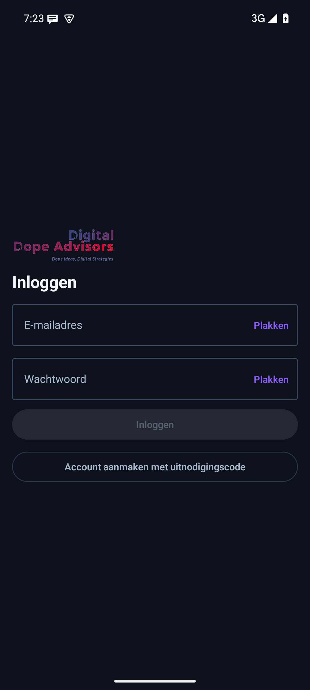
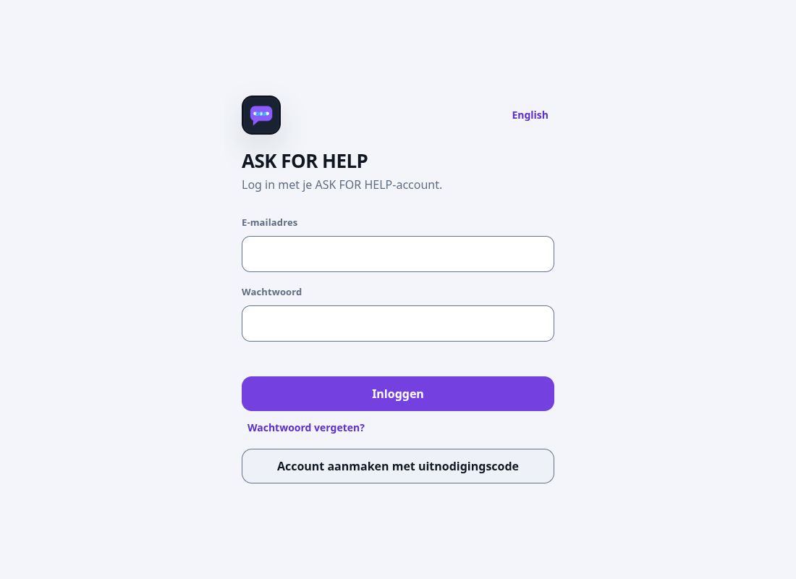
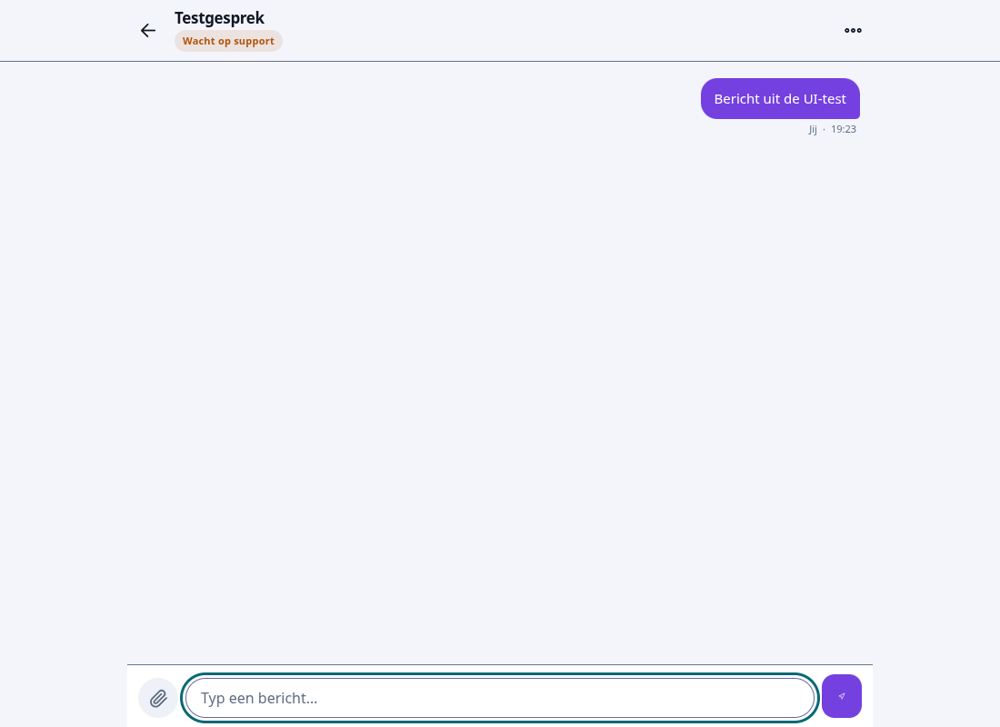
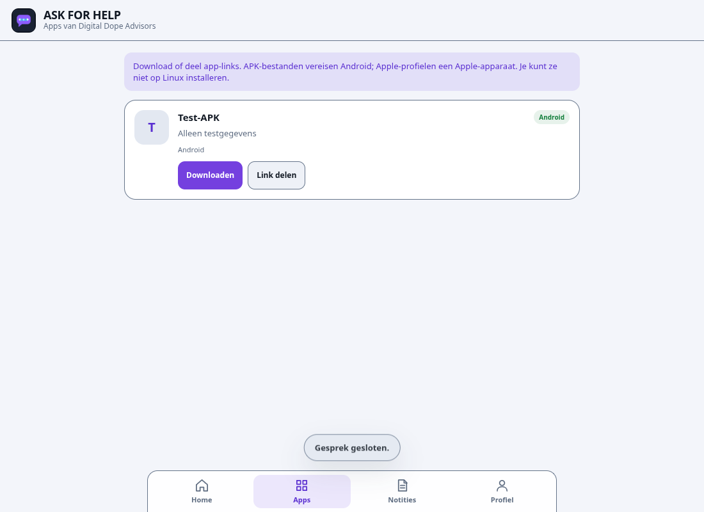
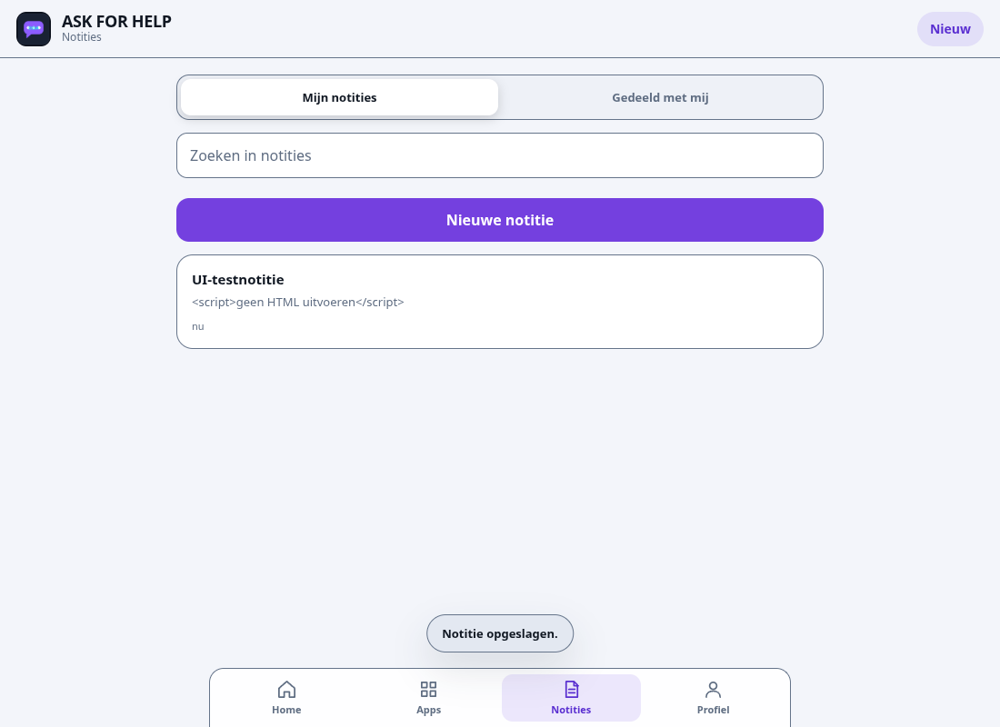
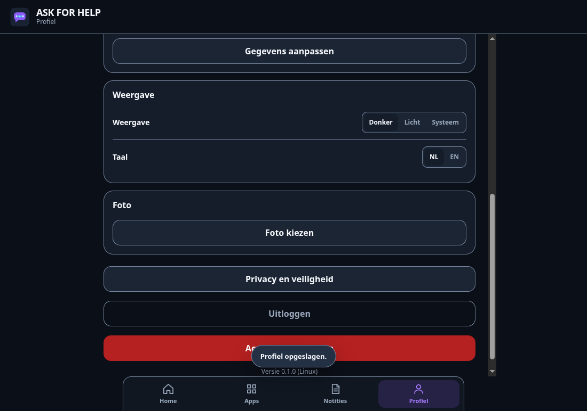

ASK FOR HELP (DDA)
Actuele downloads per besturingssysteem. Bovenaan staan de nieuwste beschikbare versies; daaronder uitleg en echte schermafbeeldingen.
Downloads en versies
Android — klant
APK · telefoon, tablet, Android TV
ASK FOR HELP 0.27.33
25 november 2026 · build 44
Universele APK
arm64-v8a
armeabi-v7a
Android — medewerker
APK · ondersteuningsteam
DDA SUPPORT 0.21.33
25 november 2026 · build 36
Universele APK
arm64-v8a
armeabi-v7a
Android TV — ontvanger
APK · DDA TV Receiver · ontvanger en afstandsbediening
DDA TV Receiver 0.3.31
25 november 2026 · build 15
APK downloaden
Windows
Portable EXE · Windows 10/11 x64
ASK FOR HELP 0.27.33
14 november 2026 · proefversie
Portable EXE downloaden
Linux (Debian/Ubuntu)
DEB · amd64/
ASK FOR HELP 0.27.33
14 november 2026 · proefversie
DEB downloaden
Samsung TV (Tizen)
WGT · Tizen 5.5/6.0
ASK HELP DDA TV 0.1.0
12 november 2026 · niet ondertekend
WGT downloaden
Apple (iPhone/iPad)
Webapp + profiel · geen openbare IPA
Beveiligde webtoegang
Toegang via persoonlijk certificaat en Firebase-aanmelding
Webapp openen
Er is geen publieke IPA/TestFlight-build. De webapp is alleen bedoeld met een persoonlijk toegangscertificaat.
Updates (25 november 2026): ASK FOR HELP 0.27.33 (klant, build 44), DDA SUPPORT 0.21.33 (medewerker, build 36) en DDA TV Receiver 0.3.31 (Android TV, build 15). Knoppen compacter gemaakt aan klant- en supportkant.
Uitleg per platform
Android
- Download de universele APK of de APK voor jouw processor (arm64-v8a, armeabi-v7a).
- Open het bestand en bevestig de installatie. Android kan toestemming vragen om apps van deze bron te installeren.
- Dezelfde klant-APK is bedoeld voor telefoon en tablet. DDA SUPPORT is de medewerkersapp en vereist een supportaccount.
- DDA TV Receiver (apart) is de ontvangst- en afstandsbedieningsapp voor Android TV: stuur apps/APK’s en bestuur de gekoppelde TV vanuit de DDA-app (zelfde netwerk, beveiligde koppeling per DDA-gebruiker, versleutelde commando’s; installatie/toegankelijkheid op TV bevestigen/inschakelen waar nodig).
Windows
- Portable EXE voor Windows 10/11 x64: openen zonder installatieprogramma.
- Nog niet volledig getest op een fysieke Windows-pc en niet met een eigen codecertificaat ondertekend.
- Windows kan een SmartScreen-waarschuwing tonen; controleer de checksum op de releasepagina.
Linux (Debian/Ubuntu)
- DEB-pakket voor amd64/ (niet ARM).
- Installatie vanuit de downloadmap:
sudo apt install ./ASK-FOR-HELP-0.1.3-amd64.deb - Dit is een lokaal pakket, geen automatische APT-repository.
Samsung TV (Tizen)
- WGT-pakket voor Tizen 5.5/6.0.
- Het pakket is niet ondertekend; installatie op een retail-TV vereist een passend Samsung-certificaat en ontwikkelaarsinstallatie.
Apple
- Geen openbare IPA of TestFlight-build beschikbaar.
- De webapp is bedoeld voor toegang met een persoonlijk certificaat en Firebase-aanmelding.
- Installatieprofielen (
.mobileconfig) zijn alleen voor Apple-apparaten en moeten via de systeeminstellingen worden bevestigd.
Veiligheid en bronbestanden
- Download bij voorkeur via de gekoppelde releasepagina’s en controleer checksums.
- Apps en downloadpakketten installeren alleen waar het platform dat ondersteunt; anders kun je het bestand downloaden of delen.
- De afzonderlijke downloadbestanden worden gepubliceerd via digital-dope-support-downloads.
Schermafbeeldingen






